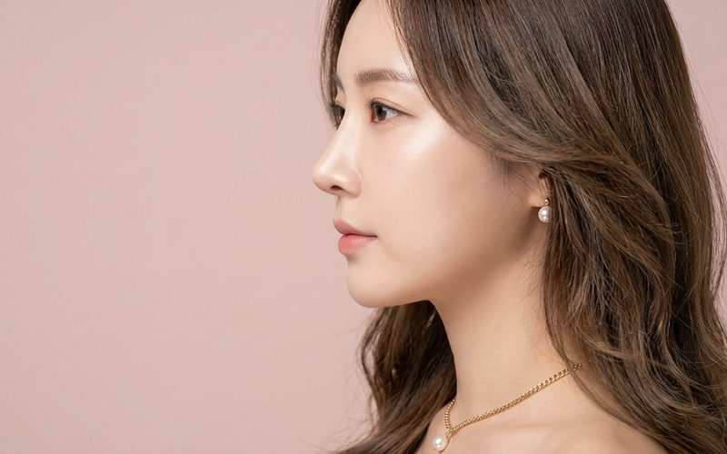
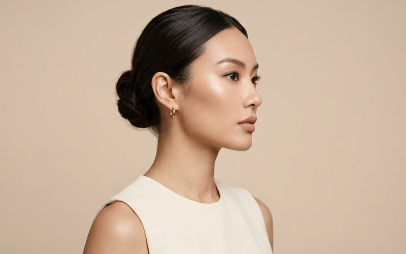
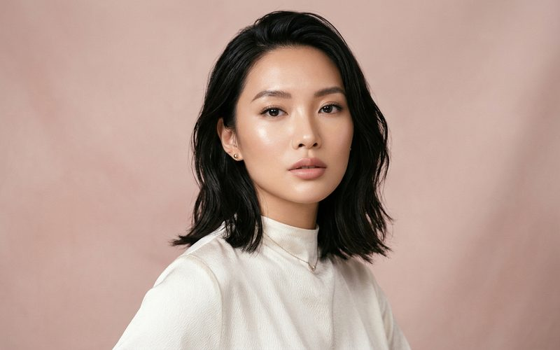

코가 넓어서 고민이신 분들도 많으신데요, 코 끝은 복코 교정수술 또는 콧구멍-콧볼 축소술로 좁혀주고, 콧대 쪽은 절골술로 좁혀주게 됩니다.
— 「복코 수술 & 콧대 절골술로 좁아질 수 있는 부위」 중에서 →— 「복코교정 - 코끝 피부가 얇은 경우」 중에서 →여러번 말씀드렸던 것 처럼 복코교정의 핵심은 1. 최대한 코끝이 부자연스럽게 찝혀 보이지 않으면서 2. 최대한 정면에서 코끝이 좁아 보이게 수술하는 것입니다.
1번과 2번 항목은 서로 반대로 가는 항목이라 (많이 좁힐수록 많이 찝혀보이게 됩니다) 오랜 경험과 술기를 통해서 최대한 양쪽을 적정선에서 만족시킬 수 있는 포인트를 잡는 능력이 필요합니다.
— 김상호
— 「코(재)수술로 바꿀 수 없는 것 - 코 끝 피부 표면적」 중에서 →코끝이 큰 환자에서 피부면적이 정해져 있기 때문에 코끝을 줄이는 것도 한계가 있습니다. 엄밀하게 말해서 코끝을 좁힐수는 있어도 코끝을 작게 만드는 것은 힘든 일이지요.
복코를 수술할 때 코끝 안쪽에 있는 연골, 연부조직 다 줄일 수 있지만 피부 표면적이 줄어야 코끝이 작아졌다고 할 수 있는데
실전에서 할 수 있는 것이라면 코끝을 좁히고 높여서 정면에서 코끝이 좁아보이도록 하는 정도입니다.
— 김상호
— 「비절개 콧볼축소술 (콧구멍이 클 때 & 작을 때)」 중에서 →복코교정을 위해서 병원을 찾는 분들이 많으신데요, 일반적으로 복코교정은 코끝의 크기를 줄이는 수술인데 코끝이 줄어들면 옆에 달려 있는 콧볼이 커보이는 경우가 종종 있습니다. 그래서, 많은 경우에 복코교정 과 함께 콧볼축소술 을 하게 된답니다.
— 김상호
— 「복코 재수술」 중에서 →수술을 하면서 늘 느끼는 것은 큰 것 하나를 얻으면 뭔가 하나는 내 주어야 한다는 것입니다.
결국 얻고 잃는 그 경계점을 어디로 잡을것인가 하는 것이 수술의 포인트가 됩니다.
늘 강조하지만 상담은 이미 수술의 시작입니다.
— 김상호
코끝의 피부가 얇은 경우에는 코끝연골(날개연골)의 모양을 다듬어서 복코를 교정하게 되는데요
수술은 비중격연골을 이용해서 코끝을 높이면서 복코교정시행하였고
콧대는 실리콘 보형물로 높여주었습니다.
벌어져있던 양측 코끝 연골이 잘 모아져서 오똑하고 세련된 코끝이 되었습니다.
사다리꼴 모양이던 코끝을 정삼각형에 가까운 모양으로 바꾸었습니다.
수술 전에 보이는 양측 비공비대칭은 수술 후에도 남게 된답니다. 이런 부분에 대해서는 수술전 상담시에 미리 충분히 설명을 드리고 있습니다.
옆라인에서는 코끝이 수술전보다 크게 좁아져 보이지 않는데요, 이것은 코끝의 피부표면적이 일정하므로 정면에서 좁히다 보면 남는 피부들이 코끝의 아래위쪽으로 모이기 때문입니다.
옆라인에서도 좁은 코끝을 만들려면 지금의 결과보다 코끝을 더 높여야 하는데요, 지금보다 코끝이 높아지면 과한 느낌의 강남스타일 코가 된답니다.
마취 : 수면마취
수술시간 : 1시간 전후
회복기간 : 1주일
세안 및 화장 : 1주일부터 하세요
수술을 마치고 알루미늄 재질의 기브스로 모양을 잡아주면 일주일 정도만에 코뼈가 새로운 위치에서 다시 붙게된답니다.
복코 교정하신지 한달 정도 되는 사진입니다. 이후 코끝의 잔붓기가 지속적으로 빠지면서 좀 더 날씬한 느낌으로 변해간답니다.
붓기가 빠지면서 더 날씬하고 오똑한 코끝이 된답니다.
필러 재수술의 경우 일반 코수술에 비해 붓기가 조금 더 지속된답니다.
— 「복코교정 + 비중격 명품코성형 (코필러 재수술)」 중에서 →
복코수술
정면 10개월
복코교정 - 코끝 피부가 얇은 경우
정면 · 코끝 피부가 얇은 경우
복코교정 - 코끝 피부가 얇은 경우
아래쪽에서
비중격연골 명품코성형 재수술 - 복코성형, 절골술
정면 · 복코 재수술
일반적인 복코교정 + 콧날개 줄이기
정면 · 콧날개 줄이기 함께
복코교정 + 비중격 명품코성형 (코필러 재수술)
정면 · 코필러 재수술 함께
비중격 연골 명품코성형 + 휜코교정(절골) + 복코교정 + 매부리교정
정면 · 매부리 교정·절골 함께
복코 성형
얼굴 정면 1개월수술 결과는 개인에 따라 차이가 있을 수 있습니다. 사진을 누르면 해당 케이스 글로 이동합니다.
실제 수술을 해서 코가 좁아지게 되면 얼굴도 좁아보이게 됩니다. 코가 넓으면 아무래도 얼굴도 넓어 보이게 되고, 코가 좁아지면 얼굴도 좁아보이게 된다..
— 「복코교정 & 콧볼축소술 하면 코끝이 작아지면서 얼굴이 넓어보인다던데요?」 중에서 →수술 전 사진처럼 콧날개가 퍼지고 콧구멍이 넓은 경우에는 콧날개와 콧구멍(비공)을 같이 줄이는 시술을 하게 됩니다. 콧날개 조작 없이 복코만 교정하게 되면 상대적으로 수술 후 콧날개가 더 커보일 수 있어 이런형태의 코에서는 같이 수술받는 것이 좋답니다.
— 「일반적인 복코교정 + 콧날개 줄이기」 중에서 →엘라스티꿈 이용한 비절개콧볼축소술은 수술 후 5년 기준 그 효과를 봤을 때 제가 만족할 만큼 유지가 되지 않아서 요즘은 비절개 콧볼축소술 단독으로는 추천드리지 않는 상태입니다.
— 「복코교정 & 콧볼축소술 하면 코끝이 작아지면서 얼굴이 넓어보인다던데요?」 중에서 →절골술이란 코뼈에 금을 가게 해서 다른 위치로 옮겨 넓은 콧대를 날씬하게 좁혀주거나, 휘어진 콧대를 바로 잡을 때 사용하는 시술법이랍니다.
— 「절골술(osteotomy) - 넓은 코뼈 좁히기」 중에서 →복코 재수술 상담을 오신 분들 중에는 복코수술을 했지만 전혀 효과를 보지 못했다는 분들이 가장 많고, 다음은 마치 빨래집게로 집어놓은 것 처럼 찝힌코가 되어서 교정을 위해 찾아주시는 분들이 두번째로 많습니다. 차라리 복코가 교정이 안된 것은 일상생활에 지장은 없는데, 바짝 찝혀버린 코는 대인관계에 지장을 줄 수 있답니다.
— 「복코수술」 중에서 → 복코
복코
복코 수술 & 콧대 절골술로 좁아질 수 있는 부위
코가 넓어서 고민이신 분들도 많으신데요, 코 끝은 복코교정수술 또는 콧구멍-콧볼 축소수술로 좁혀주고, 콧대쪽은 절골술로 좁혀주...

복코복코교정 & 콧볼축소술 하면 코끝이 작아지면서 얼굴이 넓어보인다던데요?
복코수술이나 콧볼축소술, 콧구멍 축소수술 상담하시는 분들 중에서 수술 후 코 끝이 작아지면 상대적으로 얼굴이 더 넓어보이고 커...
 복코
복코
복코수술
제가 한때 복코교정수술에 심취해서 오랫동안 정말 많은 복코를 수술했고, 덕분에 저만의 복코교정 비법(?)을 몇 가지 있습니다.
복코수술
2015년 10월 2일
 복코
복코
복코 성형
복코교정에서 코끝이 작아져야 한다는 것은 기본적인 사항이고 수술에서 가장 중요한 포인트는 두가지입니다.
 복코
복코
절골술(osteotomy) - 넓은 코뼈 좁히기
콧대와 코끝을 높이면서 넒은 콧대를 절골술로 좁히고, 코끝은 복코교정을 한 경우..
 복코
복코
복코 재수술
"강남의 유명병원에서 수술하셨지만 복코가 충분히 줄어들지 않았다. 더 줄일 수 있는 방법이 있을까?"
 복코
복코
복코교정 - 코끝 피부가 얇은 경우
피부가 두꺼운 경우에 비해 연골을 모아준 후 찝혀보일 가능성이 높으므로 이 부분을 염두에 두고 수술을 해야 한답니다.
 복코
복코
비중격연골 명품코성형 재수술 - 복코성형, 절골술
오래전에 실리콘 보형물로 코성형을 하신 분입니다. 복코의 교정을 위해 상담을 오섰습니다.
비중격연골 명품코성형 재수술 - 복코성형, 복코교정
2013.12.1

복코복코교정 - 코끝 피부가 얇은 경우
2013.11.29
복코교정 + 비중격 명품코성형 (코필러 재수술)
2012.08.14
코필러 재수술 + 복코교정
2012.08.14
 복코
복코
비중격 연골 명품코성형 + 휜코교정(절골) + 복코교정 + 매부리교정
비중격 연골로 코끝을 높이면서 복코를 교정하고, 매부리 제거 후 절골술로 코뼈를 모아주고 실리콘 보형물로 전체콧대를 높여주었습...
복코 재수술
2011.11.22
 복코
복코
복코교정 + 비중격 명품코성형 (코필러 재수술)
코수술을 처음하시는 분 중에 적당한 조건을 갖춘 경우 비중격연골을 이용해서 돌출입이 교정되는 명품코성형을 할 수 있습니다.
 복코
복코
일반적인 복코교정 + 콧날개 줄이기
주로 사용하는 비중격연골 이용한 복코교정사례입니다 콧날개 조작 없이 복코만 교정하게 되면 상대적으로 수술 후 콧날개가 더 커보...
 복코
복코
남자의 명품코성형
안면비대칭이 동반된 휜코 교정 및 남자의 명품코성형 (휜코교정 및 복코와 매부리코 성형)

복코복코 성형
매부리코 성형과 복코성형은 특히나 관심이 가고 결과에 자신 있는 수술입니다.